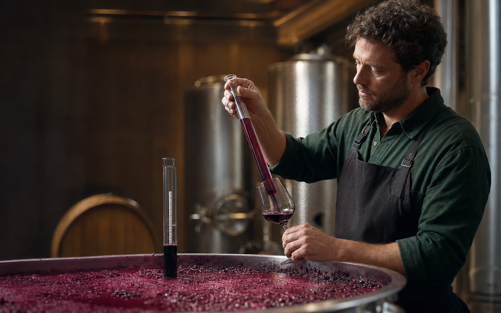
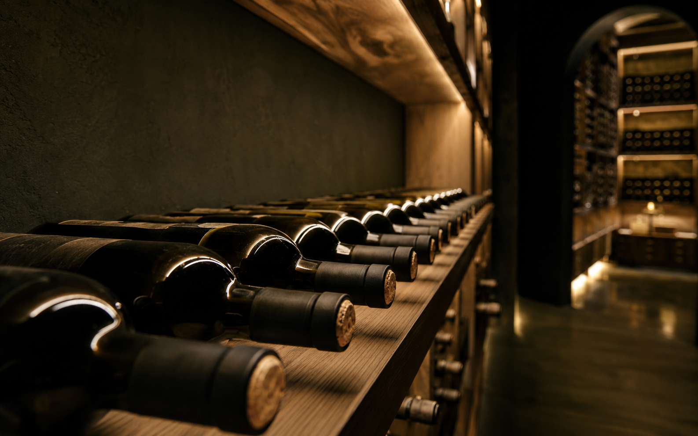
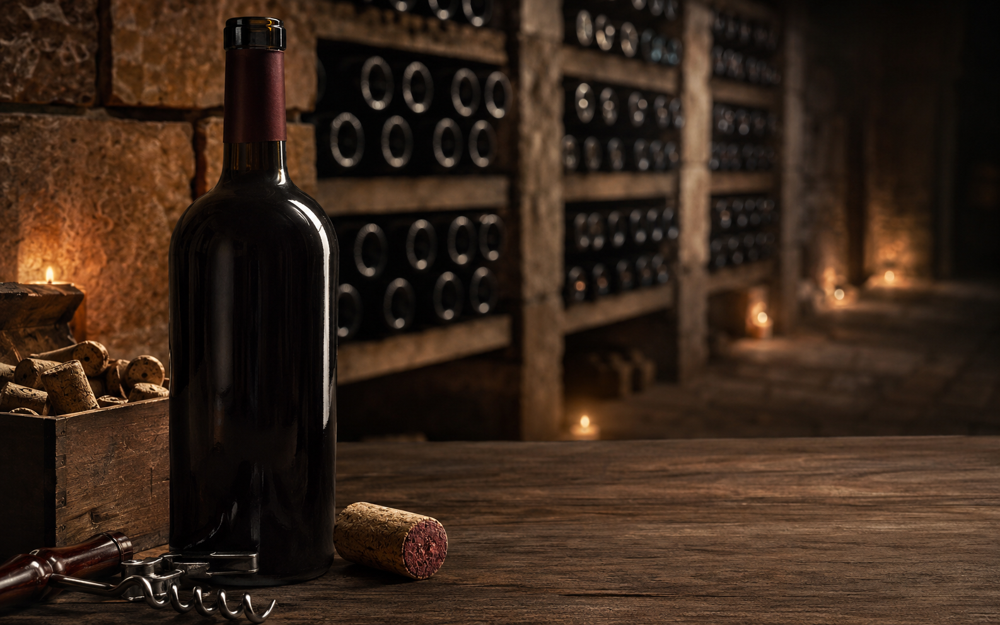
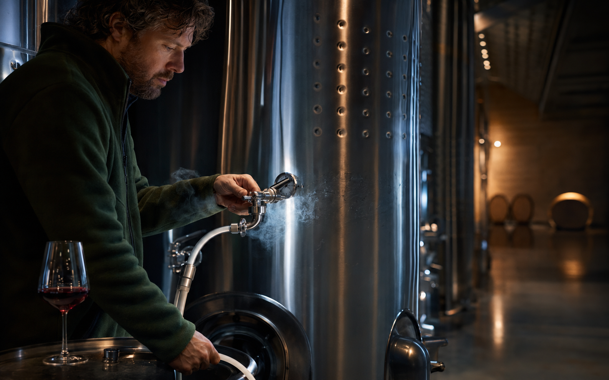
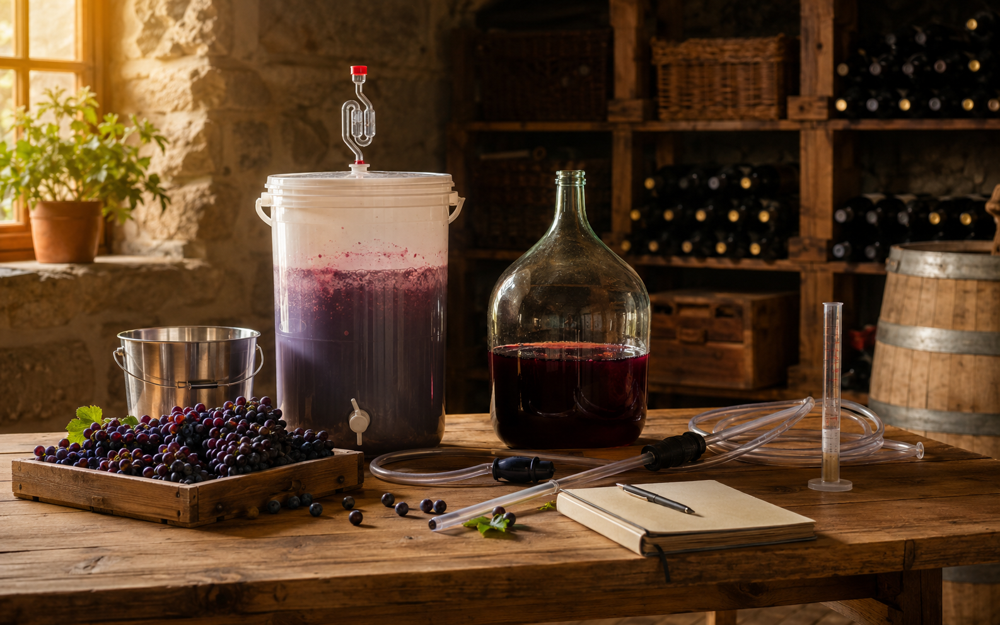

ייצור מקצועי12.07.2026 · 5 דקות קריאה
בקרת איכות בייצור יין: הנקודות שאסור לפספס
מהקליטה ועד הבקבוק: שגרת בדיקות שמונעת טעויות ושומרת על הכיוון הסגנוני של היין.
לקריאה ←
THE KNOWLEDGE CELLAR
מאמרים, מדריכים ותובנות מתוך יותר משלושה עשורים של עשייה ייננית.

ייצור מקצועימהקליטה ועד הבקבוק: שגרת בדיקות שמונעת טעויות ושומרת על הכיוון הסגנוני של היין.
לקריאה ←
אחסון ויישוןלמה פקק טבעי עדיין נשאר בחירה מרכזית בעולם היין, ואיך עובדים איתו נכון.
לקריאה ←
טכנולוגיית ייןחמצן, חנקן ופחמן דו־חמצני: מתי כל גז עוזר, ומתי עבודה לא מדויקת יוצרת סיכון.
לקריאה ← יין ואוכל
יין ואוכלכך בונים רצף יינות שמלווה את הארוחה, מהקידוש ועד המנה האחרונה.
לקריאה ←
מדריך מעשיהציוד, ההיגיינה והמדידות שהופכים ניסוי ביתי לתהליך מסודר שאפשר ללמוד ממנו.
לקריאה ←המגע בין היין לפקק, הטמפרטורה והאור — שלושת התנאים שמכריעים מה יקרה בבקבוק.
לקריאה ←לא נמצאו מאמרים מתאימים.

FROM THE JUDEAN HILLS · TO THE WORLD
הצטרפו לעדכוני הבציר, פתיחת בית היין, גיליונות YAYIN והאירועים הקרובים.
או בואו נתחיל שיחה אישית ←